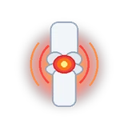
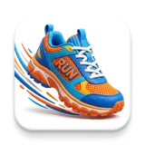
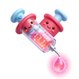

Taguatinga Sul
Arthro Clin Ortopedia & Traumatologia
Hospital Santa Marta · St. E Sul QSE 11, Área Especial 1 e 17, sala 205 · Taguatinga — DF, 72025-110
Ortopedia e medicina da dor
Consulta em ortopedia e medicina da dor com espaço para ouvir sua história, esclarecer possibilidades e definir, junto com você, os próximos passos.

O atendimento
O cuidado ortopédico começa pela escuta: compreender o que mudou na sua rotina, o que causa desconforto e quais são as suas dúvidas. A consulta é organizada para que você saia com as orientações mais claras.
Dr. Pedro Henrique Oliveira atua em ortopedia e medicina da dor, com atendimento pensado para orientar cada etapa de forma próxima e individualizada.
Você escolhe a clínica de preferência. A equipe direciona o contato para o agendamento.
No consultório
Locais de atendimento
Selecione sua clínica no momento do agendamento. A equipe fará o direcionamento pelo WhatsApp da unidade escolhida.
Hospital Santa Marta · St. E Sul QSE 11, Área Especial 1 e 17, sala 205 · Taguatinga — DF, 72025-110

Centro Clínico Advance 2 · SGAS 915, lote 69, sala 149 · Asa Sul, Brasília — DF, 70390-150

Edifício Pátio Brasil · SCS Quadra 7, Bloco A, sala 1110 · Brasília — DF, 70307-901

Rua 5 Norte, lote · Águas Claras, Brasília — DF, 71907-720
Agendamento
Depois de selecionar a unidade, o contato será direcionado para o WhatsApp de agendamento correspondente.
Quando procurar
Uma consulta pode ajudar a entender a origem do desconforto e definir os próximos passos com mais segurança.

Quando a dor continua, volta com frequência ou interfere no seu dia a dia.

Ao sentir dificuldade para caminhar, trabalhar, dormir ou fazer atividades habituais.
Para avaliar lesões e planejar um retorno gradual e orientado às atividades.

Quando quiser conhecer opções de tratamento e procedimentos para alívio da dor.
Para conversar sobre exames, diagnósticos e possíveis caminhos de cuidado.
Quando precisar de mais clareza antes de tomar uma decisão sobre o tratamento.